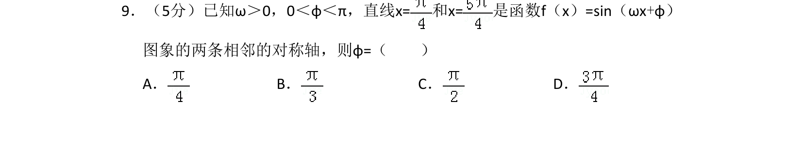
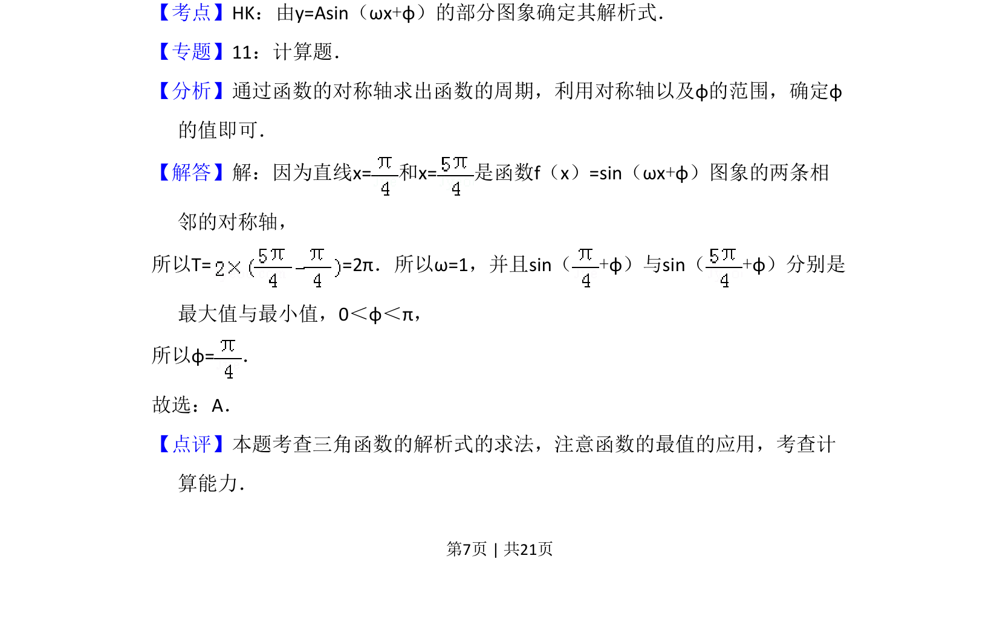

考点：三角函数的对称轴 周期 由函数图象求解析式
三角函数的对称轴
周期
由函数图象求解析式

已知正弦函数的两条相邻对称轴，利用对称轴间距求周期，进而确定参数φ的值。

📄 原 PDF 第 7 页：素材/真题/吉林/2008-2024·（吉林）数学高考真题/2012年高考数学试卷（文）（新课标）（解析卷）.pdf
素材/真题/吉林/2008-2024·（吉林）数学高考真题/2012年高考数学试卷（文）（新课标）（解析卷）.pdf